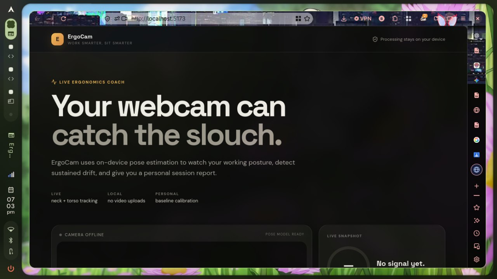
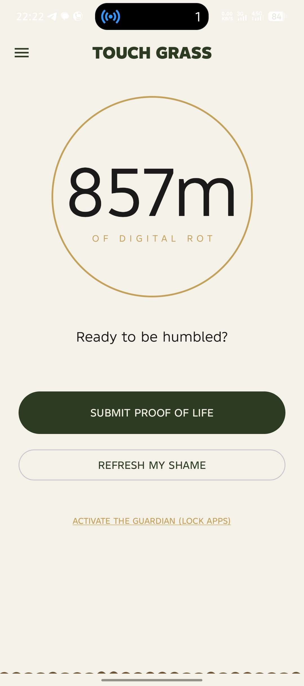

Aposma is a local-first code intelligence tool designed to review,
analyze, and document source code. It provides command-line workflows
for review, documentation, analysis, and history, with optional
AI-assisted review.
Status: In development.
How I built it
Designed a command-line interface around review, docs,
analyze, and history workflows.
Developed the C++ analysis component and connected it
with Clang/LLVM.
Added a Python environment for the optional
AI-assisted review workflow.
Tested the commands on source files and refined
the analysis and review output.
Technologies used
C++
Python
Clang/LLVM
CMake
Git
2. ErgoCam — AI Posture Coach

ErgoCam is a computer-vision posture coaching prototype that uses
pose landmarks to examine body alignment while a person works.
The prototype explores signals such as neck alignment,
shoulder symmetry, and forward lean.
Status: Prototype.
How I built it
Set up the React and Vite application.
Connected the camera-based pose detection workflow
using MediaPipe.
Used pose landmarks to calculate posture-related
measurements.
Presented posture measurements and feedback
in the application interface.
Technologies used
JavaScript
React
Vite
MediaPipe Pose Landmarker
3. Touch Grass — Screen-Time App

Touch Grass is an Android app project focused on screen-time
awareness and encouraging more intentional breaks from phone use.
Status: Android/Kotlin project.
How I built it
Identified screen-time awareness as the main problem
the app explores.
Set up the Android project using Kotlin.
Planned the app flow around helping users reflect
on phone use and take breaks.
Developed and refined the application as an Android project.
Technologies used
Kotlin
Android Studio
Android SDK
Project Demonstration Video
This section uses the demonstration media supplied with
the Part II lab starter pack. Replace these files with
a recording of one of your own projects when available.